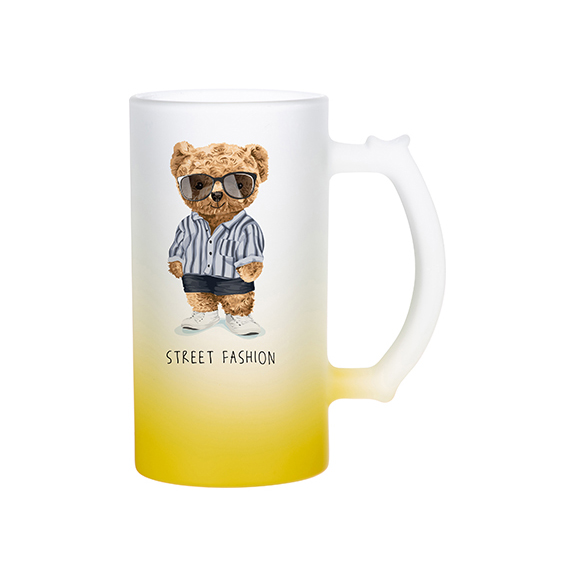
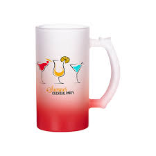
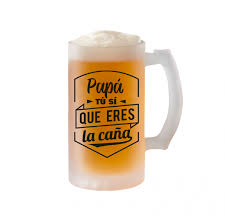

Materiales necesarios
- Jarras con recubrimiento para sublimación
- Impresora de sublimación (con tintas de sublimación)
- Papel para sublimación
- Cinta térmica resistente al calor
- Horno para sublimación o prensa de tazas
- Diseño gráfico impreso en papel de sublimación
- Guantes térmicos (opcional pero recomendable)

Pasos para sublimar jarras
- Diseña e imprime tu imagen en papel para sublimación usando tinta de sublimación.
- Recorta el diseño si es necesario y colócalo sobre la jarra, asegurándolo con cinta térmica.
- Coloca la jarra en una prensa de tazas o en un horno especial para sublimación.
- Ajusta el tiempo y temperatura recomendados (generalmente 180-200°C por 3 a 6 minutos, dependiendo del equipo).
- Retira la jarra cuidadosamente con guantes térmicos.
- Deja enfriar la jarra antes de manipularla o lavarla.

Consejos útiles
- Asegúrate de que la jarra sea apta para sublimación (debe tener un recubrimiento especial).
- Utiliza imágenes en alta resolución para mejores resultados.
- Verifica la configuración de tu prensa o horno para evitar sobrecalentamiento.
- Haz pruebas en jarras de muestra antes de trabajar con productos finales.
